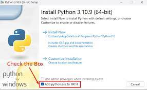
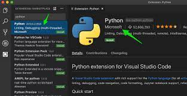

import pandas as pd
import matplotlib.pyplot as plt
import seaborn as sns
import numpy as np1 Introduction to Python for Data Science
1.1 Background
In this section, we delve into the basics of Python for Data Science. Python is a simple yet powerful programming language that has utility in web development, scientific computing, data science and machine learning. For a start, there are two versions of Python; Python version 2 and Python version 3. In this course, we work exclusively with Python version 3. Moreover, our interest in this section is the use of Python for data analysis. Let us first install Python.
1.2 Installing Python
The installation of Python will differ slightly depending on the operating system; Windows, Mac, and Linux. The site https://www.python.org/downloads/ contains the Python executables for each operating system. ASt the time of writing this book, the Python version release is Python 3.11.5. However, installation procedures do not change much. The internet is full of tutorials on the installation of Python. In this book, we refer the reader to the available installation guidelines.
1.2.1 Installing Python on Windows
Microsoft has a comprehensive set of installation procedures for installing Python on Windows available on this website https://learn.microsoft.com/en-us/windows/python/beginners. Microsoft recommends the installation of Python from the Microsoft Store. We also recommend this approach because it will save you from the complications of setting the Python path. The link also contains information about the installation of VS Code, a popular text editor for writing Python code. We recommend that you also install VS Code.
If you choose to download and install Python directly from the Python Website, ensure that you set the path correctly. Specifically, when installing Python, ensure that you tick the choice Add Python to Path in the installation dialogue box (See Figure 1.1).

1.2.2 Installing Python on Mac OS
We refer the reader to the following website https://www.makeuseof.com/how-to-install-python-on-mac/ for instructions on installing Python on Mac OS. We spewcifically point you to the section titled “How to Install Python With the Official Installer” as it offers a simpler and direct way to install Python on Mac OS. We also recomend that the readers install VS Code by following instructions on this site https://code.visualstudio.com/docs/setup/mac.
1.2.3 Installing Python on Linux
Most linux distributions come with linux pre-installed. For instance, Ubuntu comes with the latest Linux 3 release installed. To check the version of Python on Linux, open the terminal and run the following command.
python3 --versionTo install VS Code, follow the instructions on this link https://code.visualstudio.com/docs/setup/linux.
1.3 Popular Python Text Editors and Interactive Development Environments (IDEs).
There are numerous popular IDEs and text editors for use with Python. The most popular IDE is pycharm. Pycharm comes in two flavors, the professional edition and the community edition. The community edition has reduced functionality compared to the professional edition.
The most popular text editor for Python is VS Code. VS Code is free to download and use. This is our editor of choice iin this book. Our choice of VS Code is out of our personal preference. You can follow the contents of this book while using other platforms like Sublime text, Jupyter notebooks, among others.
1.4 Setting up VS Code for Python Programming
VS Code is a text editor. To make VS Code work with Python (and other programming languages), we need to install appropriate VS Code extensions. In our case, we install the following VS Code extensions.
- Python.
- Jupyter
- Code Runner.
- Quarto
- Prettier.
Let us illustrate how to install the Python extension.
- First, open the Extensions view (Ctrl+Shift+X).
- Filter the extension list by typing ‘python’.
- Click on the Python extension (Verify that it the extensions is created by Microsoft).
- Finally, Install the extension (See Figure 2 and 3 below).

You can follow the same procedure to install the other extensions.
1.5 Installing Python Packages
1.6 Loading Data into Python
We shall work with data from the United Nations Population Department (UNPD) to illustrate data analysis in Python. The data consists of population and life expectancy estimates and is available in the following website: https://population.un.org/wpp/Download/Standard/MostUsed/.
The first step in analyzing data in Python is to load the standard libraries: pandas for importing files, matplotlib and seaborn for data visualization, and numpy for mathematical operations. When importing the libraries, it is common, though not neccesary to alias the packages (like pd for pandas and plt for matplotlib.pyplot). This convention makes it easy to reference the libraries when writing code. Not that you could use any other alias. However, in the Python community, pandas is usually aliased as pd. The same is the case for the other libraries.
We start by importing the data using pandas. Pandas has many handy functions for importing data in variuous formats. Given that our data is in Ms Excel format, we use the pd.read_excel() function to import the data.
The pd.read_excel() webpage details the numerous arguments that we could supply to the function. To keep things simple, we will just supply the file path. The data is in the first sheet of the excel workbook and has column names as the first row. Hence, we stick with the default arguments; sheet_name=0, and header=0. Note that we could also supply a list of alterantive column names to the names parameter. For now, we leave the names parameter to the default of none.
population = pd.read_excel("data/WPP2022_GEN_F01_DEMOGRAPHIC_INDICATORS_COMPACT_REV1.xlsx")1.7 Exploring Data in Python
The head method allows us to view the first 5 rows of the data table by default. In the example below, we specify that we want to display the first 3 rows instead.
population.head(3)| index | variant | region_subregion_country_area | notes | location_code | ISO3_code | ISO2_code | SDMX_code | type | parent_code | ... | male_mortality_before_age_60_deaths_per_1000_male_births | female_mortality_before_age_60_deaths_per_1000_female_births | mortality_age_15_50_both_sexes_deaths_under50_per_1000_alive_at_15 | male_mortality_age_15_50_deaths_under50_per_1000_male_alive_at_15 | female_mortality_age_15_50_deaths_under50_per_1000_female_alive_at_15 | mortality_age_15_60_both_sexes_deaths_under60_per_1000_alive_at_15 | male_mortality_age_15_60_deaths_under60_per_1000_male_alive_at_15 | female_mortality_age_15_60_deaths_under60_per_1000_female_alive_at_15 | net_migrants_000 | net_migration_per_1000 | |
|---|---|---|---|---|---|---|---|---|---|---|---|---|---|---|---|---|---|---|---|---|---|
| 0 | 1 | Estimates | WORLD | NaN | 900 | NaN | NaN | 1.0 | World | 0 | ... | 580.75 | 498.04 | 240.316 | 271.625 | 208.192 | 378.697 | 430.259 | 324.931 | 0 | 0 |
| 1 | 2 | Estimates | WORLD | NaN | 900 | NaN | NaN | 1.0 | World | 0 | ... | 566.728 | 490.199 | 231.177 | 258.09 | 203.78 | 368.319 | 415.836 | 319.336 | 0 | 0 |
| 2 | 3 | Estimates | WORLD | NaN | 900 | NaN | NaN | 1.0 | World | 0 | ... | 546.317 | 477.264 | 218.674 | 240.034 | 197.142 | 353.055 | 395.533 | 309.91 | 0 | 0 |
3 rows × 65 columns
We can do the same using the tail method to view the last few rows of the data table.
population.tail()| index | variant | region_subregion_country_area | notes | location_code | ISO3_code | ISO2_code | SDMX_code | type | parent_code | ... | male_mortality_before_age_60_deaths_per_1000_male_births | female_mortality_before_age_60_deaths_per_1000_female_births | mortality_age_15_50_both_sexes_deaths_under50_per_1000_alive_at_15 | male_mortality_age_15_50_deaths_under50_per_1000_male_alive_at_15 | female_mortality_age_15_50_deaths_under50_per_1000_female_alive_at_15 | mortality_age_15_60_both_sexes_deaths_under60_per_1000_alive_at_15 | male_mortality_age_15_60_deaths_under60_per_1000_male_alive_at_15 | female_mortality_age_15_60_deaths_under60_per_1000_female_alive_at_15 | net_migrants_000 | net_migration_per_1000 | |
|---|---|---|---|---|---|---|---|---|---|---|---|---|---|---|---|---|---|---|---|---|---|
| 20591 | 20592 | Estimates | Wallis and Futuna Islands | 2 | 876 | WLF | WF | 876.0 | Country/Area | 957 | ... | 92.066 | 102.718 | 30.643 | 26.781 | 33.892 | 82.852 | 82.197 | 83.32 | -0.201 | -16.706 |
| 20592 | 20593 | Estimates | Wallis and Futuna Islands | 2 | 876 | WLF | WF | 876.0 | Country/Area | 957 | ... | 99.196 | 89.345 | 29.201 | 29.159 | 29.17 | 79.633 | 88.556 | 72.163 | -0.171 | -14.368 |
| 20593 | 20594 | Estimates | Wallis and Futuna Islands | 2 | 876 | WLF | WF | 876.0 | Country/Area | 957 | ... | 77.781 | 80.136 | 24.304 | 22.291 | 25.981 | 66.639 | 69.324 | 64.496 | -0.171 | -14.489 |
| 20594 | 20595 | Estimates | Wallis and Futuna Islands | 2 | 876 | WLF | WF | 876.0 | Country/Area | 957 | ... | 85.608 | 86.364 | 26.572 | 24.691 | 28.127 | 72.73 | 76.411 | 69.685 | -0.083 | -7.096 |
| 20595 | 20596 | Estimates | Wallis and Futuna Islands | 2 | 876 | WLF | WF | 876.0 | Country/Area | 957 | ... | 89.321 | 84.68 | 25.848 | 24.836 | 26.644 | 74.207 | 80.373 | 68.905 | -0.083 | -7.112 |
5 rows × 65 columns
Let us look at the number of rows and columns of the data by calling the shape attribute.
population.shape(20596, 65)The info() method allows us to have an overview of the data incluyding the column names and data types.
population.info()<class 'pandas.core.frame.DataFrame'>
RangeIndex: 20596 entries, 0 to 20595
Data columns (total 65 columns):
# Column Non-Null Count Dtype
--- ------ -------------- -----
0 index 20596 non-null int64
1 variant 20596 non-null object
2 region_subregion_country_area 20596 non-null object
3 notes 5475 non-null object
4 location_code 20596 non-null int64
5 ISO3_code 17064 non-null object
6 ISO2_code 16992 non-null object
7 SDMX_code 20304 non-null float64
8 type 20596 non-null object
9 parent_code 20596 non-null int64
10 year 20592 non-null float64
11 total_pop_jan1_000 20596 non-null object
12 total_pop_july1_000 20596 non-null object
13 male_pop_july1_000 20596 non-null object
14 female_pop_july1_000 20596 non-null object
15 pop_density_july1_sqkm 20596 non-null object
16 pop_sex_ratio_july_males_per_100_females 20596 non-null object
17 median_age_july1_years 20596 non-null object
18 natural_change_births_minus_deaths_000 20596 non-null object
19 natural_change_births_minus_deaths_per_000 20596 non-null object
20 pop_change_000 20596 non-null object
21 pop_growth_rate _percentage 20596 non-null object
22 Pop_annual_doubling_years 20596 non-null object
23 Births_000 20596 non-null object
24 births_women_15_19_000 20596 non-null object
25 crude_birth_rate_per_000 20596 non-null object
26 total_fertility_rate_live_births_per_woman 20596 non-null object
27 net_reproduction_rate_surviving_daughters_per_woman 20596 non-null object
28 mean_age_childbearing_years 20596 non-null object
29 sex_ratio_at_birth_males_per_100_female_births 20596 non-null object
30 total_deaths_thousands 20596 non-null object
31 male_deaths_thousands 20596 non-null object
32 female_deaths_thousands 20596 non-null object
33 crude_death_rate_deaths_per_1000_population 20596 non-null object
34 life_expectancy_at_birth_both_sexes 20596 non-null object
35 male_life_expectancy_at_birth 20596 non-null object
36 female_life_expectancy_at_birth 20596 non-null object
37 life_expectancy_at_15_both_sexes 20596 non-null object
38 male_life_expectancy_at_15 20596 non-null object
39 female_life_expectancy_at_15 20596 non-null object
40 life_expectancy_at_65_both_sexes 20596 non-null object
41 male_life_expectancy_at_65 20596 non-null object
42 female_life_expectancy_at_65 20596 non-null object
43 life_expectancy_at_80_both_sexes 20596 non-null object
44 male_life_expectancy_at_80 20596 non-null object
45 female_life_expectancy_at_80 20596 non-null object
46 infant_deaths_under_age_1_thousands 20596 non-null object
47 infant_mortality_rate_infant_deaths_per_1000_live_births 20596 non-null object
48 live_birth_surviving_to_age1 _thousands 20596 non-null object
49 under_five_deaths_under_age5_thousands 20596 non-null object
50 under_five_mortality_deaths_under_age5_per_1000_live_births 20596 non-null object
51 mortality_before_age_40_both_sexes_deaths_per_1000_live_births 20596 non-null object
52 male_mortality_before_age_40_deaths_per_1000_male_births 20596 non-null object
53 female_mortality_before_age_40_deaths_per_1000_female_births 20596 non-null object
54 mortality_before_age_60_both_sexes_deaths_per_1000_live_births 20596 non-null object
55 male_mortality_before_age_60_deaths_per_1000_male_births 20596 non-null object
56 female_mortality_before_age_60_deaths_per_1000_female_births 20596 non-null object
57 mortality_age_15_50_both_sexes_deaths_under50_per_1000_alive_at_15 20596 non-null object
58 male_mortality_age_15_50_deaths_under50_per_1000_male_alive_at_15 20596 non-null object
59 female_mortality_age_15_50_deaths_under50_per_1000_female_alive_at_15 20596 non-null object
60 mortality_age_15_60_both_sexes_deaths_under60_per_1000_alive_at_15 20596 non-null object
61 male_mortality_age_15_60_deaths_under60_per_1000_male_alive_at_15 20596 non-null object
62 female_mortality_age_15_60_deaths_under60_per_1000_female_alive_at_15 20596 non-null object
63 net_migrants_000 20596 non-null object
64 net_migration_per_1000 20596 non-null object
dtypes: float64(2), int64(3), object(60)
memory usage: 10.2+ MBpopulation.describe(include="float64")| SDMX_code | year | |
|---|---|---|
| count | 20304.000000 | 20592.00000 |
| mean | 410.088652 | 1985.50000 |
| std | 268.841860 | 20.78311 |
| min | 1.000000 | 1950.00000 |
| 25% | 158.000000 | 1967.75000 |
| 50% | 415.500000 | 1985.50000 |
| 75% | 643.000000 | 2003.25000 |
| max | 914.000000 | 2021.00000 |
population.describe(include="object")| variant | region_subregion_country_area | notes | ISO3_code | ISO2_code | type | total_pop_jan1_000 | total_pop_july1_000 | male_pop_july1_000 | female_pop_july1_000 | ... | male_mortality_before_age_60_deaths_per_1000_male_births | female_mortality_before_age_60_deaths_per_1000_female_births | mortality_age_15_50_both_sexes_deaths_under50_per_1000_alive_at_15 | male_mortality_age_15_50_deaths_under50_per_1000_male_alive_at_15 | female_mortality_age_15_50_deaths_under50_per_1000_female_alive_at_15 | mortality_age_15_60_both_sexes_deaths_under60_per_1000_alive_at_15 | male_mortality_age_15_60_deaths_under60_per_1000_male_alive_at_15 | female_mortality_age_15_60_deaths_under60_per_1000_female_alive_at_15 | net_migrants_000 | net_migration_per_1000 | |
|---|---|---|---|---|---|---|---|---|---|---|---|---|---|---|---|---|---|---|---|---|---|
| count | 20596 | 20596 | 5475 | 17064 | 16992 | 20596 | 20596 | 20596 | 20596 | 20596 | ... | 20596 | 20596 | 20596 | 20596 | 20596 | 20596 | 20596 | 20596 | 20596 | 20596 |
| unique | 1 | 289 | 46 | 237 | 236 | 9 | 20337 | 20340 | 20156 | 20152 | ... | 19966 | 19893 | 19575 | 19530 | 19191 | 19848 | 19825 | 19682 | 15838 | 12811 |
| top | Estimates | Australia/New Zealand | 2 | BDI | BI | Country/Area | ... | ... | ... | ... | ... | ... | ... | ... | ... | ... | ... | ... | ... | 0 | 0 |
| freq | 20596 | 144 | 792 | 72 | 72 | 17064 | 4 | 4 | 76 | 76 | ... | 76 | 76 | 76 | 76 | 76 | 76 | 76 | 76 | 578 | 578 |
4 rows × 60 columns